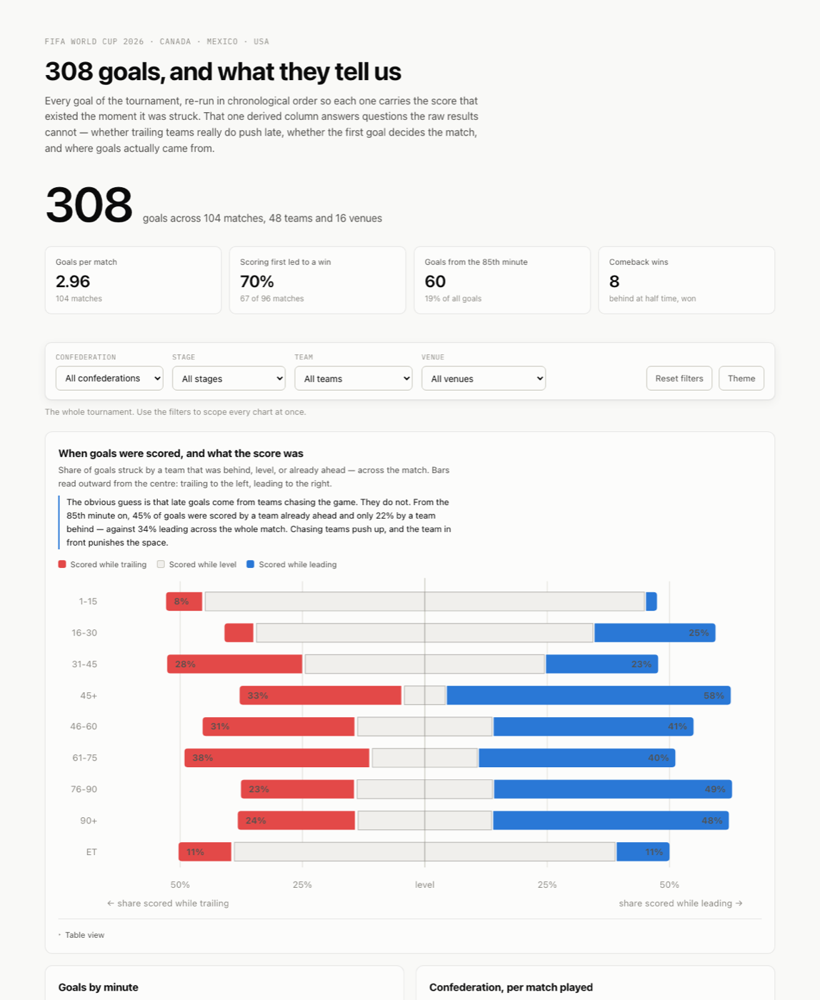

308 goals, and the column that made them interesting
Open the live dashboard → · Code on GitHub

Why I built it
I saw a World Cup dashboard on LinkedIn and realised I had no data visualization work of my own. I'm comfortable in SQL and in getting data into shape; I had almost nothing to show for the part where someone else reads it. So I built one — and made the derivation, not the charts, the actual project.
The source is thin on purpose
The feed is public domain and complete, which is the good news. It is also ten fields
per match, with goals as bare {name, minute} objects:
{
"round": "Matchday 1",
"date": "2026-06-11",
"time": "13:00 UTC-6",
"team1": "Mexico", "team2": "South Africa",
"score": { "ft": [2, 0], "ht": [1, 0] },
"goals1": [{ "name": "Julián Quiñones", "minute": "9" }],
"goals2": [],
"group": "Group A",
"ground": "Mexico City"
}One match, as the feed gives it to you.
Chart that directly and you get what everyone gets: goals per team, goals per minute. The questions I actually wanted — do trailing teams push late, does the first goal decide the match, did the roofed stadiums play differently — need columns that don't exist yet.
Score state: replaying the match
The one that carries the project. Every goal is re-run in chronological order and stamped with the score that existed the moment before it was struck:
running = [0, 0]
for event in sorted(events, key=lambda e: e["order"]):
before_for = running[event["side"] - 1]
before_against = running[2 - event["side"]]
event["score_state"] = ("Leading" if before_for > before_against else
"Level" if before_for == before_against else
"Trailing")
running[event["side"] - 1] += 1It's a windowed state calculation over an ordered event stream — the same shape as a running total in SQL. It turns a flat list of goals into something you can interrogate.
The finding inverts the obvious guess. From the 85th minute on, 45% of goals were scored by a team already ahead and only 22% by a team behind — against 34% leading across the match as a whole. Teams chasing a game push players forward, and the team in front punishes the space they leave.
I expected the opposite. That's the point of deriving the column instead of assuming the answer.
Three traps in the data
1. ft is not the final score
It's the score after 90 minutes. Five matches went to extra time and four of those to
penalties, so anything keyed on ft alone calls the wrong winner — including
both quarter-finals that went long. Precedence has to be shootout, then extra time, then
regulation. Belgium–Senegal reads ft [2,2] and finished 3–2.
2. Own goals are credited to the beneficiary
Miro Muheim is Swiss but appears under goals1 of Qatar v Switzerland.
So the team credit is already right — but the player played for the other side.
Attribute the goal to his listed team and you misassign 14 goals in every player-level
cut. The pipeline carries team and scorer_team as separate columns.
3. Stoppage time is not the minute it follows
"90+4" has to sort after the 90th minute and before the 91st, and must never
collapse into 90 — a stoppage-time winner is a different event from a
90th-minute one. Parsed as (base, stoppage, base + stoppage/1000).
Validation, because a silent break is the real risk
The pipeline refuses to write anything until fifteen assertions pass. Five check against facts published elsewhere, so an upstream change can't slip through unnoticed:
[ok] matches 104
[ok] goals 308
[ok] golden boot scorer Kylian Mbappé
[ok] France goals 20
[ok] champion Spain
[ok] goals reconcile to match totals 308Plus a per-match reconciliation: the flattened goal list has to reproduce every scoreline exactly or the build fails naming the match. That check is what confirmed the own-goal behaviour above — if my reading had been wrong, 14 matches would not have reconciled.
Choices I'd defend
- Standard library only. No pandas, no venv, no wheels to fail on a new interpreter. It runs on any Python 3 on any machine, today and in two years.
- No charting library. The charts are hand-written SVG. That sounds like extra work until you try to make a library produce 2px gaps between stacked segments and rounded ends only at the data end. It also means no CDN, so the page works offline.
- The colours were validated, not chosen. The palette was run through a colourblind-separation check in both light and dark modes rather than eyeballed. Score state is encoded as diverging — trailing and leading are opposite poles — because it's polarity, not identity.
- The raw feed is committed. The build reproduces byte-for-byte even if upstream changes.
What I'd do next
Player positions would open up a lot — whether defenders scored more from set pieces late, for one — but that needs a 300-plus player lookup that doesn't exist in any free source. The honest version of this project stops where the data stops.